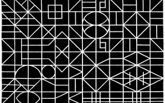

A trama e o círculo
The Mesh and the Circle
Mariana Caló, Francisco Queimadela
Portugal / Italien 2014
34 min – HD – port. OmeU
B+K+S+P: Mariana Caló, Francisco Queimadela – T: Jonathan Saldanha
Ein betörendes Essay aus den Urstoffen unseres Lebens. Intuitiv gehen die Filmemacher den Zusammenhängen zwischen konkreten Gesten, Sinneseindrücken und analogem Denken nach.
"In a mesh where we keep archetypes in contact, some solutions may arise. We captured substances, metals, elements, shapes, surfaces and matters, from the subterranean vapour to the light of the sun." – A TRAMA E O CÍRCULO
freitag 9 okt 18.30 uhr filmmuseum münchen
Mariana Caló (geb. 1984 in Viana do Castelo, Portugal) and Francisco Queimadela (geb. 1985 in Coimbra, Portugal) arbeiten seit 2010 zusammen. Sie sind aktive Mitglieder im Colectivo Piso und Altes Finanzamt, Berlin. Sie leben und arbeiten in Oporto und Berlin.
.
Filme Gradations of Time Over a Plane 2010-2013 – Observatory 2012 – Orle Effect 2013